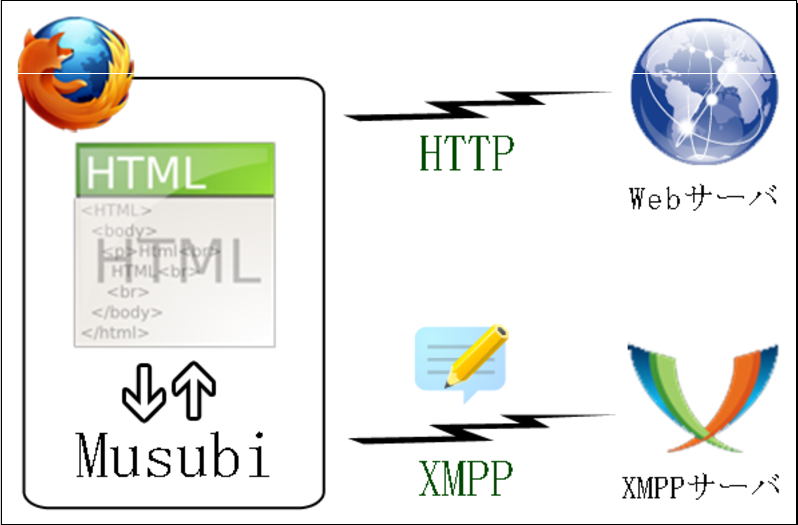

「むすび」とは
- Firefoxブラウザがインスタントメッセンジャーになるアドオン
- インターネットでリアルタイムコミュニケーション
チャット
- テキストをメッセージ

HTMLで作れます
{kind=link}
{kind=link}
{kind=link}
{kind=link}
ブラウザと融合 - HTML
JavascriptのAPI
Musubi.init(recv)初期化(受信処理関数)Musubi.send(
<message>
<body>こんにちは</body>
</message>
)
{kind=link}
デモ
Firefoxアドオン
- Win,Mac,Linuxに完全対応
- インストールは3クリック
- ローカルファイル読み書き、ソケット通信などできる
- アドオンだけに許された特権で、Webページからは触れない
- Java, .NETのようなプラットフォーム
- GUI部品
- 内蔵データベース
- HTML、Javascript、CSS、XML、DOM
- Web技術の結晶
むすびの設計(1/2)
- HTMLに新しいAPI
- 新しいURI xmpp:
- HTTPと新しいプロトコル XMPP
- コード行数は2300行
- Firefoxアドオンのおかげ
むすびの設計(2/2)
アーキテクチャ
HTTPの限界
HTTPではチャットは作れない
- プルはあるが
- プッシュがない
- サーバが更新してもブラウザに伝えられない
- ブラウザがポーリングするのが精一杯
HTTPの限界を越えるComet(しかし…)
HTTPでチャットを実現するハック
- ブラウザごとに対応がマチマチ
- サーバに負担
- 通信に無駄が多い
むすびの設計(再掲)
アーキテクチャ
XMPP(1/4)
Extensible(拡張性のある) Messaging(メッセージと) and Presence(プレゼンス) Protocol(プロトコル)
- インスタントメッセージ
- プレゼンス(オンライン、離席中、etc)
- 多人数チャット
- 音声&ビデオ電話
- 協調作業
- コンテンツ・シンジケーション
- XMLデータの一般化ルーティング
XMPP(2/4)
- オープン(仕様が公開されている)
- スタンダード(IETFが標準化、RFC3920)
- 分散(電子メールのように、誰でもサーバを立てられる)
- セキュア(エンド・ツー・エンドの暗号化(SASL, TLS))
- 拡張性(XML)
XMPP(3/4)
- プロフィール設定(vCards)
- ファイル交換
- 友達管理(承認、ブロック、etc)
- ルーム管理(招待、キック、プライベートルーム、etc)
XMPPの仕様に既にある
XMPP(4/4)
- Google Talkが使っている
- Google Waveも使っている
むすびはGoogleのアカウントで今すぐ使える
比較 Google Talk
Googleのインスタントメッセンジャー
- テキストのみ。
- むすびはWebページでコミュニケーションできる
- シェアが低い(100万人?)
比較 Google Wave
Googleが5月末に発表したコラボレーション、コミュニケーションのためのプラットフォーム
- ブラウザで動く
- チャットやドキュメントの共同編集
- 遅い、頻繁にクラッシュする、バグが多いとの意見も
- ブラウザでコミュニケーションという未知の可能性
比較 Skype
VoIPの代名詞
- 大きなシェア(1億人)
- 音声・ビデオチャット
- 非公開プロトコル
比較 SOBA
- P2P、高いセキュリティ、高品質なネット会議
- 音声・ビデオ
- ブラウザがそこまで追いついていない
- デスクトップアプリケーション共有
- ブラウザでは不可能
- 充実したサポート体制
- SOBA Web APIに興味津々
Web OSの夢(1/5)
ここ5年くらい、いくつかのWebサービスを組み合わせて新しいものを作るという、マッシュアップがさかんです。Webサービス同士の糊になるのは何だろう? と悩んでいたある日、先生と四色定理の話をしていて、問題をグラフに置き換えるというアイディアを教えてもらいました。見方が変われば発想も変わり、私の中に、糊(境界)ではなく対話(辺)という発想が生まれました。
{kind=link}
Web OSの夢(2/5)
Webサービス同士が対話する。あるいは、人とWebサービス、人と人、が対話する。それなら、人とWebが対話するとは何だろう。
人とOSが対話するときに使うのは、対話的シェルです。テキストシェルを、ブラウザ上でハイパーテキストシェルなWebアプリケーションとして実現するために必要なのは何か。こうして、ブラウザとIMとの融合という考えに至りました。
インタープリタと対話するデモ(40秒){kind=link}
{kind=link}
Web OSの夢(4/5)
- Unix : むすび
- 端末 : ブラウザ
- C言語 : Javascript
- テキスト : ハイパーテキスト
- 行ストリーム : メッセージストリーム
- ファイルシステム : URI
- プロセス : Webサービス
{kind=link}
{kind=link}
これからの課題
- コミュニケーションツールとして、ユーザ数のクリティカル・マスを越えること
- SOBAのような音声・ビデオ会議機能